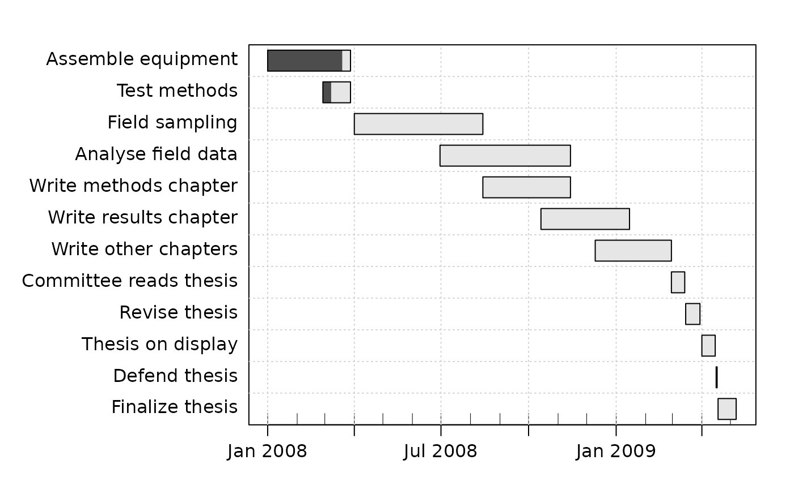

Read a data file containing gantt information. The data format is strict, and deviations from it may lead to error messages that are difficult to understand; see “Details”.
Arguments
- file
a connection or a character string giving the name of the file to load.
- debug
boolean, set to
TRUEto print debugging information.
Value
A gantt object, which is a data frame containing
description (a character description of the task), "start"(the task's start time), "end" (the task's end time),
"progress" (a number giving the percent progress on this item, or
NA if none given), and needed.by (a number giving the
indices of other tasks that rely on this task, or NA if none given).
Details
The first line is a header, and must contain the words Key,
Description, Start, End, Done, and
NeededBy, written exactly in this way, with commas separating the
words. (Blanks are ignored in this line.)
Additional lines indicate the details of each of several sub-projects, in comma-separated items, as follows:
A key for the task. These must be distinct, and are typically just the numbers 1, 2, 3, etc.
A description of the task. (This may not contain commas!)
The start time for the task, in ISO 8601 format (
YYYY-MM-DDorYYYY-MM-DD hh:mm:ss).The end time for the task, in the same format as the starting time. If an end time equals the corresponding start time, no rectangle will be drawn for the activity, and this gives a way to make headings (see example 7 for
plot,gantt-method()).A number indicating the percentage of this task that has been completed to date.
A space-separated optional list of numbers that indicate the keys of other tasks that depend on this one. This list is ignored in the present version of
read.gantt().
Sample data file
Key, Description, Start, End, Done, NeededBy
1, Assemble equipment, 2008-01-01, 2008-03-28, 90
2, Test methods, 2008-02-28, 2008-03-28, 30
3, Field sampling, 2008-04-01, 2008-08-14, 0
4, Analyse field data, 2008-06-30, 2008-11-14, 0
5, Write methods chapter, 2008-08-14, 2008-11-14, 0
6, Write results chapter, 2008-10-14, 2009-01-15, 0
7, Write other chapters, 2008-12-10, 2009-02-28, 0
8, Committee reads thesis, 2009-02-28, 2009-03-14, 0
9, Revise thesis, 2009-03-15, 2009-03-30, 0
10, Thesis on display, 2009-04-01, 2009-04-15, 0
11, Defend thesis, 2009-04-16, 2009-04-17, 0
12, Finalize thesis, 2009-04-18, 2009-05-07, 0
See also
Other things related to gantt data:
as.gantt(),
gantt-class,
ganttAddTask(),
gantt,
plot,gantt-method,
summary,gantt-method
Examples
library(plan)
filename <- system.file("extdata", "gantt.dat", package="plan")
g <- read.gantt(filename)
summary(g)
#> Key, Description, Start, End, Done, NeededBy
#> 1, Assemble equipment, 2008-01-01, 2008-03-28, 90
#> 2, Test methods, 2008-02-28, 2008-03-28, 30
#> 3, Field sampling, 2008-04-01, 2008-08-14, 0
#> 4, Analyse field data, 2008-06-30, 2008-11-14, 0
#> 5, Write methods chapter, 2008-08-14, 2008-11-14, 0
#> 6, Write results chapter, 2008-10-14, 2009-01-15, 0
#> 7, Write other chapters, 2008-12-10, 2009-02-28, 0
#> 8, Committee reads thesis, 2009-02-28, 2009-03-14, 0
#> 9, Revise thesis, 2009-03-15, 2009-03-30, 0
#> 10, Thesis on display, 2009-04-01, 2009-04-15, 0
#> 11, Defend thesis, 2009-04-16, 2009-04-17, 0
#> 12, Finalize thesis, 2009-04-18, 2009-05-07, 0
plot(g)
